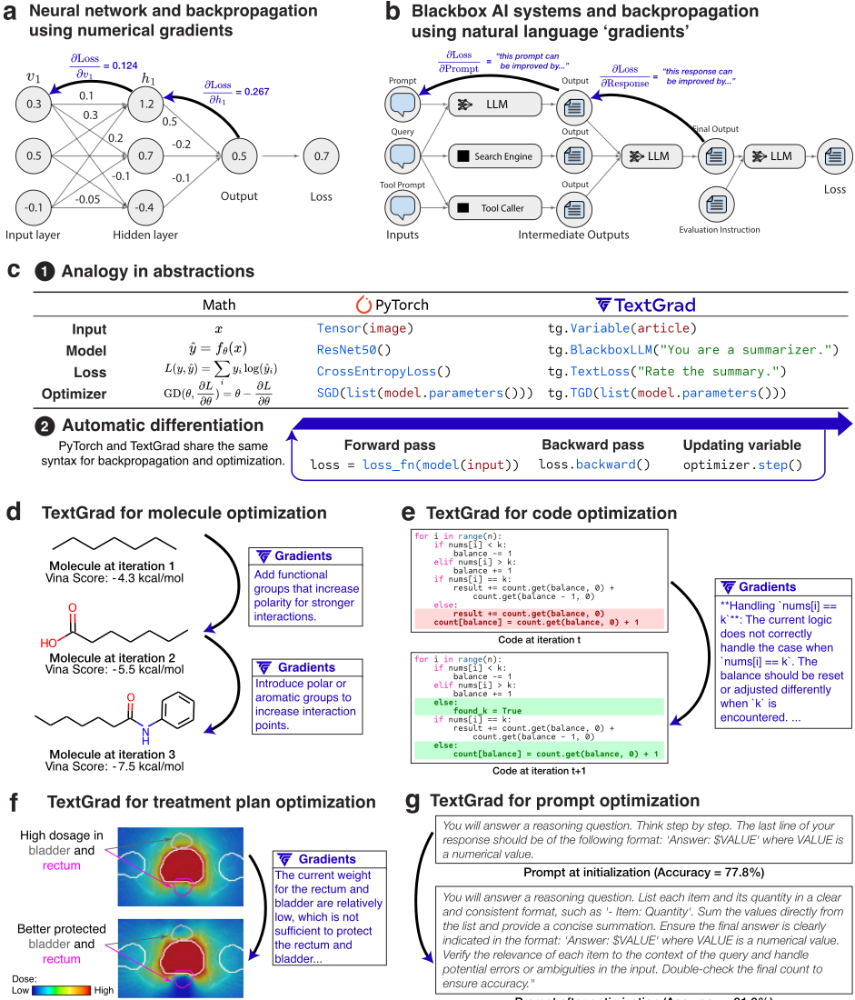
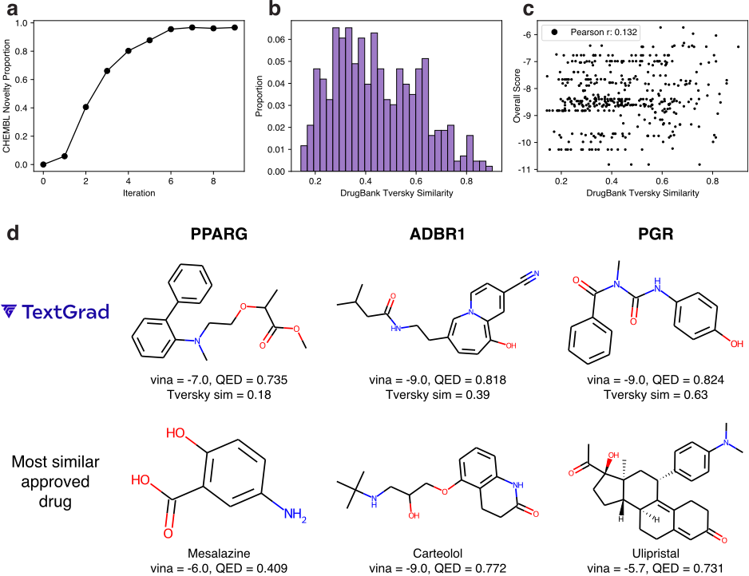
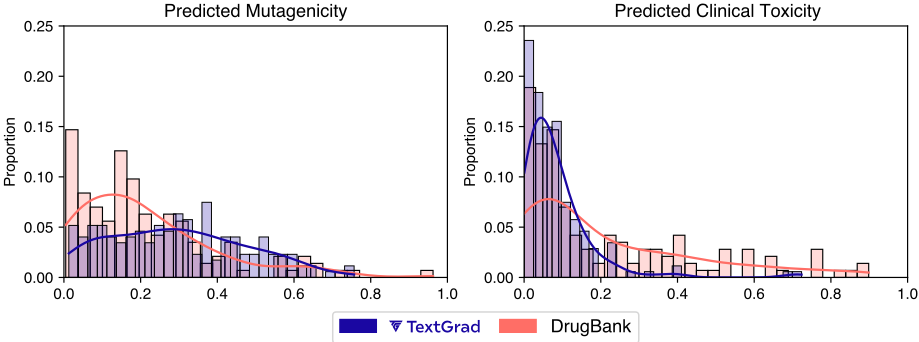

TextGrad: Automatic "Differentiation" via Text
TextGrad：基于文本的自动“微分”
简介
论文针对复合 AI 系统（多个 LLM 与工具、模拟器组合）目前依赖专家手工搭建和启发式调优、缺乏原则化自动优化方法的问题，提出 TEXTGRAD 框架：借鉴神经网络反向传播与自动微分的思想，把 AI 系统表示为计算图，用 LLM 生成的自然语言批评作为“文本梯度”沿图反向传播，再由 Textual Gradient Descent（TGD）优化器据此更新任意文本变量（system prompt、代码、问题解答、分子结构等）。框架复刻 PyTorch 的 Variable/backward/step 抽象，用户只需提供目标函数即可开箱即用。关键结论：GPQA 上 GPT-4o 零样本准确率从 51% 提到 55%；LeetCode-Hard 解题通过率达 36%，超过 Reflexion 的 31%；用 gpt-4o 作反馈引擎优化 gpt-3.5-turbo 的 system prompt，GSM8k 从 72.9% 提到 81.1%，Object Counting 超 DSPy 7%；分子优化与放疗计划设计也达到与已上市药物/临床计划相当的结果。对团队而言，这是自动提示优化与复合 LLM 系统优化的代表性开源工具，直接服务于“把模型用好”的定位。
问题
新一代 AI 应用日益成为由多个 LLM、工具（模拟器、搜索、代码解释器等）组成的复合系统，但这些系统多由领域专家手工搭建并靠启发式反复调优；论文希望为这类系统提供类似神经网络 backpropagation 那样原则化、自动化、通用的优化方法，使系统中的任意文本组件（提示词、代码、解答案等）可被自动改进。
方法
将 AI 系统建模为计算图：节点 Variable 是文本（自然语言、代码、SMILES 等），边是 LLM 调用、模拟器、数值求解器等不必可微的函数；backward 阶段由 LLM 针对目标函数生成自然语言批评（textual gradients）并沿图递归传播聚合；用 Textual Gradient Descent 依据反馈更新变量。框架沿用 PyTorch 语法（Variable、backward、zero_grad、step），支持 minibatch 优化（tg.sum）、自然语言约束、momentum（把历史迭代放入上下文）与 in-context examples；目标函数可以是自然语言评估、单元测试结果或模拟器输出等不可微函数。论文区分两类优化：instance optimization（测试时直接迭代精化单个解，如代码、答案、分子）与 prompt optimization（用少量样例优化跨查询泛化的 system prompt，可用强模型给弱模型提供反馈）。
关键结果
GPQA：TEXTGRAD 将 GPT-4o 零样本准确率从 51% 提升至 55%（论文称 55% 为该基准已知最好结果）；MMLU Machine Learning 子集 85.7%→88.4%，College Physics 子集 91.2%→95.1%
LeetCode-Hard 代码优化：TEXTGRAD 达 36% 完成率，高于 gpt-4o 零样本的 23% 与 Reflexion 的 31%（相对提升 20%），且 TEXTGRAD 为零样本、未使用任何演示
提示优化（gpt-3.5-turbo-0125 前向 + gpt-4o 反馈，batch size 3、12 次迭代共 36 个训练样例）：GSM8k 72.9%→81.1%；Word Sorting 与 GSM8k 与 DSPy 相当，Object Counting 超 DSPy 7%；将 DSPy 选出的演示与 TEXTGRAD 优化后的指令结合，GSM8k 进一步达 82.1%
分子优化：在 DOCKSTRING 全部 58 个靶点上，从简单化学片段出发 10 次迭代生成的分子，在结合亲和力（Vina）与类药性（QED）上与 118 个临床已批准药物具竞争力；到第 6 次迭代，95% 的生成分子为新颖分子
放疗计划：在 5 例前列腺癌患者计划上，TEXTGRAD 优化计划在 PTV 各剂量指标（平均剂量、D95）上优于临床计划，且膀胱与直肠平均剂量更低、器官保护更好
创新点
与最接近的 DSPy 和 ProTeGi 相比：DSPy 与 ProTeGi 聚焦提示优化（优化指令或演示），TEXTGRAD 把文本梯度类比推广为完整的自动微分框架，不仅优化指令/演示，还把实例本身（代码片段、分子、治疗方案、问题解答）作为优化变量，显著推进了 instance optimization；与需要访问模型参数的白盒数值梯度方法不同，它仅通过 API 调用即可优化闭源模型；并以统一框架（PyTorch 语法）覆盖问答、代码、分子、放疗等异构任务，无需针对领域修改框架本身。
团队参考意义
相关度级别：high
命中能力域：3.2 提示工程 | 3.3 Agent 架构与工具使用 | 3.5 评测与可靠使用
理由：直接命中 3.2 提示工程：论文核心场景之一就是自动提示优化——用强模型（gpt-4o）作为反馈引擎自动优化弱模型（gpt-3.5-turbo）的 system prompt，正是团队“提示的设计与优化、自动提示优化、提示词资产管理”能力域的代表性工作，且框架开源、采用 PyTorch 式 API，落地门槛低。同时命中 3.3：其计算图抽象可对多步 LLM 调用组成的复合系统做端到端文本反馈优化，代码实例优化（LeetCode-Hard，结合本地测试反馈迭代修码）与团队代码生成/审查场景直接相关。命中 3.5：“支付固定成本优化提示、换取弱模型更便宜的推理”与 test-time 多算换性能的权衡，是团队关注的成本与效率优化议题；GPQA/MMLU/LeetCode 等评测方法也可借鉴。团队不做模型训练，TextGrad 恰是“把现成模型用好”的工具层方法。
建议动作：深入精读并做内部分享
中文全文
arXiv:2406.07496v1 [cs.CL] 2024年6月11日
: Automatic 'Differentiation' via Text G
Mert Yuksekgonul Federico Bianchi 1 * Joseph Boen 2 * Sheng Liu 2 * Zhi Huang 2 * Carlos Guestrin 1,3 James Zou 1,2,3
1 *
1 斯坦福大学计算机科学系
2 斯坦福大学生物医学数据科学系
3 陈-扎克伯格生物中心（Chan Zuckerberg Biohub）
通讯：MERTY@STANFORD.EDU 和 JAMESZ@STANFORD.EDU
代码仓库与教程
Abstract
人工智能（AI）正在经历一场范式转变，突破性进展由编排多个大语言模型（LLM）及其他复杂组件的系统所取得。因此，为复合式AI系统开发有原则的自动化优化方法，已成为最重要的新挑战之一。神经网络在早期也曾面临类似的挑战，直到反向传播和自动微分让优化变得“开箱即用”，才彻底改变了这一领域。受此启发，我们提出了 TEXTGRAD——一个通过文本执行自动“微分”的强大框架。TEXTGRAD 对 LLM 提供的文本反馈进行反向传播，以改进复合式AI系统的各个组件。在我们的框架中，LLM 提供丰富、通用的自然语言建议，用于优化计算图中的变量，这些变量涵盖从代码片段到分子结构等各种形式。TEXTGRAD 遵循 PyTorch 的语法与抽象，灵活且易于使用。它可开箱即用地应用于多种任务，用户只需提供目标函数，而无需调整框架的组件或提示。我们在从问答、分子优化到放射治疗计划等多种应用中展示了 TEXTGRAD 的有效性与通用性。在不修改框架的情况下，TEXTGRAD 将 GPT-4o 在 Google-Proof Question Answering 中的零样本准确率从 51% 提升至 55%，在优化 LeetCode-Hard 编程题解答方面带来 20% 的相对性能提升，改进了用于推理的提示，设计出具有理想计算机模拟（in silico）结合特性的新型类药小分子，并设计出具有高特异性的放射肿瘤治疗方案。TEXTGRAD 为加速下一代AI系统的开发奠定了基础。
1 Introduction
得益于大语言模型（LLM）[1-6] 的突破性进展，AI 系统的构建方式正在出现一种新的范式转变。新一代 AI 应用日益成为由多个复杂组件构成的复合系统，其中每个组件可以是一个基于 LLM 的智能体（agent）、一个工具（例如模拟器），或者是网络搜索。例如，由 LLM 与符号求解器进行通信构成的系统可以解决奥林匹克竞赛级别的数学问题 [7]；使用搜索引擎和代码解释器工具的 LLM 系统的表现可与人类竞赛程序员相媲美 [8]，并且正在解决真实世界的
* 共同第一作者。
MERTY@STANFORD.EDU FEDE@STANFORD.EDU TBOEN@STANFORD.EDU SHENGL@STANFORD.EDU ZHIHUANG@STANFORD.EDU GUESTRIN@STANFORD.EDU
JAMESZ@STANFORD.EDU
GitHub issues [9]。然而，这些突破中的许多都来自由应用领域专家手工构建、并通过启发式方法进行调整的系统。因此，开发有原则且自动化的方法来优化 AI 系统，是构建基于 LLM 的复合系统最为关键的挑战之一，也是释放 AI 潜力的必要条件 [10-12]。
在过去 15 年中，AI 领域的许多进展都依赖于人工神经网络和可微优化 [7, 13-17]。神经网络的不同部分（例如两个人工神经元）通过矩阵乘法等可微函数进行通信 [18]。因此，使用数值梯度和反向传播（backpropagation）[19]——它们提供了为改进模型而调整每个参数的方向——一直是训练 AI 模型的自然方式。实现反向传播的灵活自动微分框架 [20-24] 对 AI 模型的发展而言不可或缺。
为了优化新一代 AI 系统，我们提出了 TEXTGRAD——基于文本的自动“微分”。在这里，我们将微分和梯度用作对 LLM 文本反馈的一种隐喻。在该框架中，每个 AI 系统都被转化为一个计算图，其中的变量是各种复杂（不一定可微）函数调用的输入和输出。提供给变量的反馈（被称为“文本梯度”（textual gradients）[25]）以信息丰富且可解释的自然语言批评的形式给出，描述应当如何改变某个变量才能改进系统。这些梯度通过任意函数进行传播，例如 LLM API 调用、模拟器或外部数值求解器。
我们在一系列多样化的领域中展示了本框架的强大能力，涵盖从问答基准测试（benchmark）到放射治疗计划优化以及分子生成（图 1）。大语言模型（LLM）能够为这些广泛领域中的变量提供非常丰富、清晰且富有表现力的自然语言梯度，例如对分子提出修改建议、为其他 LLM 提供提示，以及代码片段。我们的框架建立在一个假设之上：当前最先进的 LLM 能够对其试图优化的系统的各个组件和子任务进行推理。我们通过以下结果展示了 TEXTGRAD 的灵活性：
我们在广泛的应用中取得的结果表明，TEXTGRAD 有望通过文本反馈的反向传播自动优化复合 AI 系统。为加速这一方向的进展，我们在 https://github.com/zou-group/textgrad 开源了我们的框架。
2 TEXTGRAD: Optimizing AI systems by backpropagating text feedback
下面我们首先描述一个示例，以展示 TEXTGRAD 在由两次 LLM 调用组成的系统中的样子，然后给出适用于任意复杂系统的更一般形式。
Warmup: system with two LLM calls
Example computation graph. In traditional automatic differentiation, we compute gradients that provides a direction that would improve the variable with respect to a downstream loss with the chain-rule. For a simple analog, let us look at the simple system:

Prompt after optimization (Accuracy = 91.9%)
where we denote the free parameter to optimize, the prompt, with green , and we use + to denote concatenation of two strings, and use LLM ( x ) to give x as a prompt to a language model to collect the response. We will use the chain notation:
as another way to denote this system, where we make one LLM call to generate a Prediction for a Question using a Prompt , and another LLM call to evaluate this Prediction.
Example gradient computation. In this example system, to improve the Prompt with respect to the evaluation, we instantiate an analog of the backpropagation [19] algorithm through the following:
Gradient computation for the simple graph: Prompt LLM --→ Prediction LLM --→ Evaluation
其中，当前向函数为 LLM 调用时，我们使用 ∇ LLM 作为梯度算子。a 特别地，该函数返回自然语言形式的反馈，例如“这条预测可以通过……加以改进”，反馈内容描述了应如何修改变量以改进下游目标，其作用类似于优化中的梯度。我们首先利用 Evaluation 收集针对 Prediction 变量的反馈。然后，基于该反馈以及（Prompt LLM --→ Prediction）这一调用，我们收集关于 Prompt 的反馈。
a 注意，我们对这一记号进行了重载，既用于输出变量没有后继节点的情况（例如 ∇ LLM ( Prediction, Evaluation ) ），也用于输出变量存在后继节点、因而存在梯度的情况（例如 ∇ LLM ( Prompt , Prediction, ∂ Loss ∂ Prediction ) ）。
下面给出一种灵活的方式来实例化 ∇ LLM，从而为类似 x LLM --→ y LLM --→ L 的简单系统收集反馈：
Example implementation for the gradient operator
其中，梯度对象是变量所处上下文与从 LLM a 获得的反馈的组合，其定义方式与 Pryzant 等人 [25] 类似。请注意，该算子并不依赖于（例如）应用领域。一旦实现，用于 LLM 调用的梯度算子在整个框架中对所有应用都是固定的。
a 为确保通用性和灵活性，我们实际使用的确切提示词有所不同；我们仅将这些示例用于说明。
优化器示例。在标准梯度下降中，变量的当前值通过减法与梯度相结合，例如：
延续基于梯度优化的类比，我们使用文本梯度下降（Textual Gradient Descent, TGD）：
Updating the Prompt variable in the simple graph via TGD.
来更新参数，在本例中即 Prompt。特别地，给定当前变量以及我们为该变量收集到的梯度（反馈），优化器旨在更新该变量。
实例化 TGD 的一种具体方式如下：
Example implementation of one TGD iteration
融合这些批评意见，并生成一个新的变量）。
其中 x 是我们希望改进的变量，而 ∂ L ∂ x 是我们在反向传播 a 过程中为该变量获得的反馈。与梯度算子类似，该函数同样不依赖于应用领域，且 TGD 的实现在该框架的所有使用场景中都是相同的。
a 为确保通用性与灵活性，我们实际使用的提示与这些示例有所不同；我们使用这些示例仅用于说明。
The general case
这一抽象可以轻松应用于任意复杂的系统。通过下式定义一个计算图：
其中 v 是图中的一个变量，V 是图中所有变量的集合，SuccessorsOf 返回某个变量的后继节点，PredecessorsOf 返回该变量的前驱节点。一般而言，v 的取值可以是非结构化数据，例如自然语言文本或图像。在本文的大部分结果与阐述中，v 均为自然语言文本。
进一步地，设 fv 为消费一组变量并产生变量 v 的变换。例如，我们可以使用大语言模型（LLM）或数值模拟器（Numerical Simulator）作为变换。由于不同的函数在计算梯度与收集反馈时会有各自不同的方式，我们通常用 ∇ f 表示函数 f 的梯度函数。为便于阐述，当函数显而易见时，我们将省略该下标。
梯度通过下式计算：
其中我们从 v 的所有后继节点收集梯度的集合。直观地说，我们从变量 v 被使用的每一个上下文中获取反馈，并将它们聚合起来。
式 11 递归地计算下游目标关于图中所需变量 v 的梯度。∇ f 函数的输入包括：L 关于给定变量 v 的各后继节点的梯度、变量 v 的取值，以及这些后继节点本身。请注意，最终的梯度变量包含了变量被使用的每一处位置所对应的一组上下文与批评意见。
最后，为了更新图中任意所需的变量 v，我们可以使用一个优化器：
该优化器基于 v 的当前取值和梯度来更新其取值。对于一个具有 n 条边的计算图，每一轮优化迭代至多执行 n 次额外的语言模型调用来计算梯度（对计算图中的每条边使用梯度算子进行 1 次调用）。TEXTGRAD 中各操作的实现见附录 A。
Objective functions
在数值优化和自动微分中，目标函数通常是一个可微函数，例如均方误差或交叉熵。在 TEXTGRAD 中，目标可以是一个复杂的、可能不可微的函数，其定义域和陪域可以是非结构化数据。这一选择为该框架增添了重要的通用性与灵活性。例如，我们展示了目标可以用自然语言文本来指定，并通过提示语言模型（§3.3）、运行单元测试的代码解释器的输出（§3.1）或分子模拟引擎的输出（§3.4）来计算。例如，针对一段代码片段的简单损失函数可以是如下形式：
Loss ( code , target goal ) = LLM ( Here is a code snippet: { code }
Here is the goal for this snippet: { target goal } .
Evaluate the snippet for correctness and runtime complexity. ) ,
其中，我们可以利用这一评估信号来优化代码片段，这得益于大语言模型（LLM）在模拟人类反馈、自我评估和自我改进方面已有大量文献记载的能力 [10, 28-33]。
Instance vs Prompt Optimization
我们探索两类优化问题。
在实例优化（instance optimization）中，我们直接将某个问题的解——例如一段代码片段、某个问题的解或一个分子——视为优化变量。例如，在公式 13 中，我们有一个希望在测试时加以改进的代码实例。我们的框架为其生成梯度，并直接优化该代码变量。
在提示优化（prompt optimization）中，目标是为某项任务找到一个能够在多次查询中提升大语言模型（LLM）性能的提示（prompt）。例如，我们可能希望为 LLM 找到一个系统提示（system prompt），以提升其在数学推理问题上的表现（示例参见第 3.3 节）。特别地，我们希望该系统提示能够泛化，这与实例优化形成对比——后者的唯一目标是在测试时改进针对给定查询的解。
至关重要的是，这两类问题都无需手工构建框架即可求解。
Optimization Techniques
自动微分（automatic differentiation）是 TEXTGRAD 的一个强有力类比，并为该框架中实现的优化技术提供了概念支持。下面我们描述一些示例。
批量优化（Batch Optimization）：我们为提示优化实现了随机小批量梯度下降（stochastic minibatch gradient descent）[18, 34]。具体而言，在对一个批次中的多个实例执行前向传播并评估各个损失项之后，我们使用 tg.sum 函数对损失求和（类似于 torch.sum）。在反向传播过程中，经由各个损失项得到的变量梯度被拼接在一起，这与通过加法进行反向传播的情形相呼应。
约束优化（Constrained Optimization）：我们以约束优化为类比 [35]，使用自然语言约束。特别地，我们使用自然语言约束（例如，诸如 'The last line of your response should be of the following format: 'Answer: $LETTER' where LETTER is one of ABCD.'）来引导优化器的行为。我们观察到，得益于指令微调（instruction-tuning）[36, 37]，语言模型能够遵循这些简单的约束，但当约束过多时，其可靠性可能会降低 [38, 39]。
动量（Momentum）：我们使用与梯度下降中动量的类比 [40, 41]。在优化某个变量时，TGD 优化器可以选择在进行更新时查看该变量较早的迭代结果。有关 TEXTGRAD 中所实现优化技术的更多细节，请参见附录 B。
3 Results
我们在多种多样的应用中展示了 TEXTGRAD 的灵活性。在 § 3.1 中，我们优化代码片段，以解决来自 LeetCode 的困难编程问题。在 § 3.2 中，我们优化科学问题的解答。在 § 3.3 中，我们优化提示（prompt）以提升大语言模型（LLM）的推理能力。在 § 3.4 中，我们优化化学结构以改善分子性质。在 § 3.5 中，我们优化前列腺癌患者的治疗方案。
3.1 Code optimization
代码优化是实例优化（instance optimization）的一个标志性用例。在这里，目标是对某些代码进行优化，以改进例如正确性或运行时复杂度。我们通常会有如下形式的计算图：
Code-Refinement Objective = LLM ( Problem + Code + Test-time Instruction + Local Test Results ) (14)
其中，我们优化 Code（代码）以求解给定的 Problem（问题），其监督来自有限的本地测试，以及通过一条要求对代码当前迭代版本进行批评性评估的测试指令（test-instruction）所完成的自我评估。图 1e 展示了如下问题的一个示例：给定一个大小为 n 的数组 nums，其中包含从 1 到 n 的互不相同的整数，以及一个正整数 k。返回 nums 中中位数等于 k 的非空子数组的数量。gpt-4o 提出的第一个解法未能通过测试。TEXTGRAD 在第一个解法中识别出一个边界情况（edge case），并就如何改进给出了建议。优化后的实现通过了所有测试。
任务：我们使用 LeetCode Hard 数据集 [26] 来对代码优化进行基准测试（benchmark）。LeetCode 是一个在线平台，提供编程练习题以帮助备战技术面试。LeetCode Hard 数据集包含一些高难度编程问题的示例，这些问题旨在对人类和语言模型都构成挑战，其成功指标为完成率（Completion Rate），即针对给定问题通过全部测试用例（据报道 GPT-4 达到了 7% 的完成率 [26]）。LeetCode 的测试用例并不公开，因此，在生成代码之后，必须将代码提交到 LeetCode 平台，在未见过的测试用例上进行评估。这使得该平台更适合用于评估语言模型的性能。
基线：Reflexion [26] 是 LeetCode Hard 数据集上最先进的方法。该方法提示 LLM 对代码片段以及测试时使用候选单元测试所产生的错误进行自我反思。在给出自我反思之后，LLM 会再次被提示，以该自我反思和错误为条件，提供一段更新后的代码。我们在 LeetCodeHard 上使用 gpt-4o 运行了 Reflexion，并使用 1 个上下文示例（in-context demonstration）来引导其行为（单样本，one-shot）。除 Reflexion 之外，我们还使用 gpt-4o 运行了一个零样本（zero-shot）基线，以模仿 [26] 中描述的相同的零样本基线。相比之下，TEXTGRAD 在零样本设置下运行，不使用任何示例。
结果：已有结果 [26] 显示，GPT-4 零样本的通过率为 7%，GPT-4 结合 Reflexion 的通过率为 15%。我们表明，这些结果如今已分别提升至 gpt-4o 零样本的 23%，以及使用 Reflexion 时的 31%。借助 TEXTGRAD，我们可以对解法进行优化，达到 36% 的性能。考虑到 Reflexion 是在上下文示例的辅助下运行的，而 TEXTGRAD 未使用任何示例（即零样本），这些改进更加令人印象深刻。
7
Code Refinement Objective
LLM（“你是一个被用作评估器的智能助手，并且是优化系统的一部分。你将分析针对某个编程问题的代码实现以及单元测试结果。该代码将接受更难的测试，因此不要仅仅检查代码是否通过了所提供的测试。请思考代码的正确性及其在更难的测试用例中的性能。请给出非常简洁的反馈。请研究该编程问题以及所提供的实现。对于每个未通过的单元测试用例，请以“代码未通过此测试，因为……”作为开头进行分析。解释为什么当前实现没有得到预期的输出。不要提供修改后的实现。请仔细说明代码为何存在问题，并提供反馈。
{Test-time Instruction}
{Problem}
{ Code }
{Local test Results}
| Task | Method | Completion Rate |
|---|---|---|
| LeetCode Hard [26] | Zero-shot [26] | 0.26 |
| Reflexion (1 demonstration, 5 iterations) [26] | 0.31 ± 0.012 | |
| TEXTGRAD (0 demonstrations, 5 iterations) | 0 . 36 ± 0.018 |
| Task | Method | Completion Rate |
3.2 Solution optimization by test-time training to improve problem solving
在此，我们聚焦于通过 TEXTGRAD 进行解优化的任务。在解优化中，目标是改进针对复杂问题的解，例如关于量子力学或有机化学的问题。具体而言，我们通常会有如下形式的计算图：
Solution Refinement Objective = LLM ( Question + Solution + Test-time Instruction ) (15)
其中，我们优化的参数是 Solution，损失函数则通过对该解的评估获得，例如借助大语言模型（LLM）进行评估。在每次迭代中，LLM 会收到由问题、当前解以及某种测试时指令构成的提示，该指令要求对当前迭代进行批评或审视。在整个优化轨迹中，解借助这种测试时自我评估不断得到改进。更一般地说，这一思想被称为测试时训练（test-time training）[42, 43]，即在测试时针对测试实例对机器学习模型进行训练，通常采用自监督目标。类似地，近期工作也展示了自我改进（self-refinement）在推理任务中的价值 [26, 30, 44]。特别是，即使 LLM 在首次尝试时可能无法正确回答问题或给出问题的解，它也可以通过迭代改进来提升其回答。
例如，用于该改进过程的目标函数如下所示：
Solution Refinement Objective
结果：借助 TEXTGRAD，我们提升了 gpt-4o 在具有挑战性的问答任务中的性能，并在表 2 中报告了结果。据我们所知，55% 是迄今为止 GPQA 数据集上已知的最佳结果。类似地，我们将 MMLU 子集上的性能从 85.7% 提升至 88.4%（机器学习），从 91.2% 提升至 95.1%（大学物理）。这些结果表明，通过 TEXTGRAD 自我改进在测试时投入更多计算，我们甚至能够提升最强大模型的问答性能。
3.3 Prompt optimization for reasoning
While LLMs demonstrate an impressive performance in reasoning tasks, their performance can be sensitive to the prompt used to guide their behavior. In particular, with the right choice of a prompt, their performance can be significantly improved [49]. In prompt optimization, the goal is to find a prompt or an instruction to guide the behavior of an LLM, such that it performs well on a given task. In particular, we often have a computation graph like the following:
Answer = LLM ( Prompt , Question ) Evaluation Metric = Evaluator ( Answer,Ground Truth ) (16)
1 We do this to minimize randomness, however, discussions claim there may be other sources of non-determinism with gpt-4 .
9
| Dataset | Method | Accuracy ( % ) |
|---|---|---|
| Google-proof QA[27] | CoT [46, 47] Best reported [48] TEXTGRAD | 51.0 53.6 55 . 0 |
| MMLU-Machine Learning [45] | CoT [46, 47] TEXTGRAD | 85.7 88 . 4 |
| MMLU-College Physics [45] | CoT [46, 47] TEXTGRAD | 91.2 95 . 1 |
| Dataset | Method | Accuracy ( % ) |
where we have a Question for the task, an Answer to the question, and an Evaluation Metric indicating the quality of the output given the ground truth answer. For instance, for a question-answering task, the evaluation metric would be the accuracy of the answer, evaluated e.g. using string-based metrics.
Here, given a handful of training examples to optimize a Prompt , the goal is to maximize the performance of an LLM on the given task. In our experiments, our goal is to improve the performance of a weaker and cheaper model (e.g., gpt-3.5-turbo-0125 ) using the feedback generated by stronger models (e.g., gpt-4o ). This is useful in practice because by paying a fixed cost to optimize a Prompt , the promptoptimized weaker model can be used with cheaper inference costs instead of using the strong and more expensive model.
1 # Initialize the system prompt 2 system_prompt = tg.Variable("You are a helpful language model. Think step by step.", 3 requires_grad=True, 4 role_description="system prompt to the language model") 5 6 # Set up the model object 'parameterized by' the prompt. 7 model = tg.BlackboxLLM(system_prompt=system_prompt) 8 9 # Optimize the system prompt 10 optimizer = tg.TextualGradientDescent(parameters=[system_prompt]) 11 12 for iteration in range(max_iterations): 13 batch_x , batch_y = next(train_loader) 14 optimizer.zero_grad() 15 # Do the forward pass 16 responses = model(batch_x) 17 losses = [loss_fn(response , y) for (response , y) in zip(responses , batch_y)] 18 total_loss = tg.sum(losses) 19 # Perform the backward pass and compute gradients 20 total_loss.backward() 21 # Update the system prompt 22 optimizer.step()
Here, we use TEXTGRAD in a minibatch stochastic gradient descent setting [18, 34]. In particular, at each iteration, we use a few training examples to run the forward pass in Equation 16. A pseudocode and short implementation can be found in the snippet above. Full details of prompt optimization can be found in Appendix E. Unlike instance optimization, where TEXTGRAD tries to optimize each individual solution, the goal here is to optimize a single prompt that works well across all the questions in a benchmark.
任务：我们在多个数据集上探索提示优化，包括来自 Big Bench Hard 的两个标准推理任务——对象计数（Object Counting）和单词排序（Word Sorting）（随机划分为 50/100/100 的训练/验证/测试样本）[50, 51]，以及 GSM8k 小学数学问题求解 [52]（使用来自 DSPy 的训练/验证/测试划分）。对于 GSM8k 和 Object Counting，我们使用基于字符串的精确匹配指标来量化准确率（即回答中给出的最终数字是否与真实答案相同）。
对于 Word Sorting，我们使用大语言模型（LLM）来比较回答与真实答案。我们在附录 E.1 中给出了关于这些任务、提示以及示例查询的更多细节。
方法：我们探索利用 gpt-4o [48] 在反向传播过程中提供反馈，以提升 gpt-3.5-turbo-0125 的性能。具体而言，执行推理的前向模型是 gpt-3.5-turbo-0125，而我们使用 gpt-4o 来提供反馈并改进提示。我们采用批量大小为 3、共 12 次迭代的设置，即模型总共看到 36 个训练样本，这些样本以有放回的方式随机采样。每次迭代之后，我们使用各数据集的验证集运行一轮验证循环，如果性能优于上一次迭代，我们就更新 Prompt。
基线：我们有两个主要基线：
| Dataset | Method | Accuracy ( % ) |
|---|---|---|
| Object Counting [50, 51] | CoT (0-shot) [46, 47] | 77.8 84.9 |
| Object Counting [50, 51] | DSPy (BFSR, 8 demonstrations) [10] | |
| Object Counting [50, 51] | TEXTGRAD (instruction-only, 0 demonstrations) | 91 . 9 |
| Word Sorting [50, 51] | CoT (0-shot) [46, 47] | 76.7 |
| Word Sorting [50, 51] | DSPy (BFSR, 8 demonstrations) [10] | 79 . 8 |
| Word Sorting [50, 51] | TEXTGRAD (instruction-only, 0 demonstrations) | 79 . 8 |
| GSM8k [52] | CoT (0-shot) [46, 47] | 72.9 |
| GSM8k [52] | DSPy (BFSR, 8 demonstrations) [10] | 81 . 1 |
| GSM8k [52] | TEXTGRAD (instruction-only, 0 demonstrations) | 81 . 1 |
| Dataset | Method | Accuracy ( % ) |
Prompt at initialization (GSM8k Accuracy = 72.9% ):
你将回答一道数学推理题。请逐步思考。你回复的最后一行应始终采用以下格式：'Answer: $V ALUE'，其中 V ALUE 是一个数值。
Prompt after 12 iterations with batch size 3 (GSM8k Accuracy = 81.1% ):
你将回答一道数学推理题。请用自己的话复述该问题，以确保理解无误。将问题分解为更小的步骤，并详细解释每一步的计算。验证每个步骤，并重新检查计算以确保准确。使用规范的数学记号，并与问题的上下文保持一致。最后总是以下列格式给出最终答案作为结尾：'Answer: $V ALUE'，其中 V ALUE 是一个数值。
结果：在全部三项任务上，TEXTGRAD 都显著提升了 0-shot 提示的性能。在单词排序（Word Sorting）和 GSM8k 上，其表现与 DSPy [10] 相当；在物体计数（Object Counting）上，则比 DSPy 提升了 7%。虽然上下文中的 8 个演示示例有助于引导大语言模型（LLM）的行为，但会增加推理成本。有趣的是，DSPy 优化器与 TEXTGRAD 做出了互补的调整——前者添加上下文演示示例（in-context demonstration examples），后者优化系统提示。将 DSPy 选出的示例加入 TEXTGRAD 优化后的提示中，可能进一步提升性能（对于 GSM8k，直接将 DSPy 的演示示例与 TextGrad 的指令相结合，可将准确率提升至 82.1%），这表明将两种方法结合起来是一个富有成效的方向。
11
3.4 Molecule optimization
TEXTGRAD 支持多种优化问题，包括科学与工程应用中常见的多目标优化任务。例如，在药物发现中，研究人员试图发现或设计在可合成性、药效和安全性等方面最大化多种目标的分子 [53, 54]。为了展示 TEXTGRAD 在多目标优化中的应用，我们将 TEXTGRAD 应用于药物分子优化，并展示我们的框架如何与计算工具对接，优化化学结构以同时改善其结合亲和力和类药性。
任务：对于潜在的药物分子而言，一个关键的考量因素是其结合亲和力（binding affinity），它表示分子与其蛋白质靶点之间相互作用的强度。药物设计者寻求对相关药物靶点具有高结合亲和力的分子，因为这类分子只需更低、给药频次更少的剂量即可达到疗效。这种亲和力可以用自由能 ∆G 来量化，它描述了结合态与未结合态配体-受体对之间的概率之比。∆G 可以通过对蛋白质-配体结合进行“对接”（docking）模拟来估计 [55, 56]。在我们的实验中，我们采用 Autodock Vina 工具的 Vina 分数，这是一种被广泛使用的基于物理的对接模拟器 [57]。Vina 分数越负，药物与其预期靶点结合的概率就越大。
潜在的药物分子还会根据其类药性（druglikeness）进行评估，类药性从溶解度、渗透性、代谢稳定性和转运体效应等方面估计分子在体内（in vivo）的行为表现。类药性高的分子更有可能被人体吸收并到达其靶点 [58]。一个常用的“类药性”指标是类药性定量估计（Quantatiative Estimate of Druglikeness, QED）分数，它是对分子量、亲脂性、极性表面积等重要化学特性的加权综合度量。QED 分数的范围从 0 到 1，其中 1 表示高类药性 [59]。
尽管成功的分子还涉及许多其他考量因素，但由于这两个指标相对成熟，在我们的实验中，我们将目标限定为最小化 Vina 分数和最大化 QED。这两个指标之间相互竞争的权衡关系使得该优化任务既现实又具有挑战性。具体而言，对接分数往往偏好具有众多官能团的较大分子，以最大化与结合位点的相互作用 [55, 56, 60]。相比之下，类药性则倾向于更轻、更简单、具有更好吸收特性的分子 [58, 59]。因此，同时优化这两个目标并非易事。
方法：我们将 TEXTGRAD 应用于药物分子优化，具体做法是将分子编码为 SMILES 字符串，并基于 Vina 和 QED 分数构建多目标损失。也就是说，我们对 SMILES 字符串执行实例优化（instance optimization），其中由 TEXTGRAD 生成的关于多目标损失的梯度被用于更新表示该分子的文本。
我们使用 gpt-4o 作为大语言模型（LLM），所用的提示文本见附录 F.2。在每次迭代中，通过使用来自 Autodock Vina 的 Vina 分数估计当前分子与靶蛋白的结合亲和力，并使用来自 RDKit 的 QED 分数衡量其类药性（druglikeness），来对当前分子进行评估（附录 F.1）。每个分子都被初始化为来自某个官能团的小化学片段。我们将 TEXTGRAD 应用于 DOCKSTRING 分子评估基准测试（benchmark）[61] 中的全部 58 个靶点。这 58 个靶点由从多种结构类别中采样得到的临床相关蛋白组成，其中 29 个已有临床获批药物。对于每个靶点，我们使用 TEXTGRAD 对起始片段进行 10 次迭代的优化，共针对 3 个各不相同的初始片段进行。为评估我们的性能，我们将 TEXTGRAD 生成的分子的特性与相应蛋白的临床获批药物进行比较（附录 F.3）。
12
结果：对于全部 58 个靶点，无论初始起始片段如何，TEXTGRAD 都能持续生成结合亲和力和类药性均得到改善的分子（附录 F.4）。对于已有临床获批药物的 29 个蛋白靶点，我们观察到，与使用相同损失函数评估的临床分子相比，TEXTGRAD 生成的分子在亲和力和类药性方面极具竞争力（图 2 (b)）。所得分子与其临床获批对应药物及现有化合物相比展现出独特的结构（附录 F.5），同时保持了相似的计算机模拟（in silico）安全性特征（附录 F.6）。尽管存在其他用于从头分子生成（de novo molecular generation）的机器学习方法，TEXTGRAD 相较于同类方法具有两大关键优势：首先，通过将传统化学信息学工具与 LLM 的通用知识和推理能力相结合，即使没有先验训练集，TEXTGRAD 也能产生具有竞争力的结果。其次，TEXTGRAD 的自然语言梯度框架能够产生可解释的决策，使研究人员能够精确理解分子的结构是如何以及为何被构建出来的。这两个特性共同预示着 AI Agent 在科学发现中发挥作用的光明前景。
![Figure 2: Molecule optimization via Text . TEXTGRAD optimizes a starting benzene fragment to improve its druglikeness (higher QED) and binding affinity (lower vina score) to the protein receptor PPARA. The textual gradients for the first three iterations are shown in ( a ), and the performance of all ten iterations compared to clinically approved molecules targetting PPARA in ( c) . The molecule at the final iteration has low structural similarity with its most similar clinically approved counterpart, and better QED and Vina scores (d) with a highly plausible pose geometry shown in (e) . Across 29 targets and three initial fragments, TextGrad successfully designs molecules with similar vina scores and greater QED scores than clinically approved molecules (b) .](assets/a238/figures/fig_2.png)
13
3.5 Radiotherapy treatment plan optimization
放射治疗（radiation therapy），也称为放疗（radiotherapy），是一种利用强能量束（如X射线）来杀死癌细胞的癌症治疗方法。在治疗开始之前，由放射肿瘤医师和计划设计人员组成的放疗团队会协作设计一个有效的治疗方案。这包括确定所需的放射剂量，并精确锁定需要治疗的部位。
放疗计划设计可以表述为一个双环优化问题。内环被称为逆向计划（inverse planning），包括影响图优化和直接孔径优化等过程 [62]。该优化问题通常是带约束的，由数值优化器求解，目标是最小化一个加权代价函数，以在多个相互冲突的目标之间取得平衡 [63]。这些目标包括将处方剂量递送至计划靶区（PTV）——PTV 涵盖肿瘤以及为应对计划或治疗实施中的不确定性而额外预留的边缘区域——同时保护被称为危及器官（OARs）的关键正常组织，使其免于接受不安全的剂量。
治疗计划设计的主要挑战在于将总体临床目标转化为能够产生可接受计划的加权目标函数和剂量约束 [62]。人类计划设计人员通常采用试错法，根据优化过程的结果迭代调整优化超参数，直到计划满足临床要求 [62]。这些超参数包括目标函数中分配给 PTV、器官和其他组织的权重。这一过程可能带有主观性，受计划设计人员的经验和可用时间的影响，并且需要在多次迭代中反复运行计算开销高昂的优化算法。这使得整个过程效率低下、耗时且成本高昂 [64]。
方法。我们应用 TEXTGRAD 来执行外环优化，即为内环数值优化器进行超参数优化。实例优化使用 gpt-4o 在以字符串形式表示的超参数上进行：θ = 'weight for PTV: [PTV WEIGHT], weight for bladder: [BLADDER WEIGHT], weight for rectum: [RECTUM WEIGHT], weight for femoral heads: [FH WEIGHT], weight for body: [BODY WEIGHT]'。在给定超参数后，我们通过采用数值优化器，并将损失构建为当前计划与临床目标之间的失配，来获得治疗方案。具体而言，为了计算梯度，我们首先使用数值优化器 matRad[65] 求解内环优化，得到相应的治疗方案 P ( θ ) = matRad ( θ )。损失则使用 LLM 在治疗方案 P 和临床目标 g 上进行计算，所用的提示词见第 G.1 节。
而新的超参数则通过一次 TextGrad 下降步骤获得
为了进一步提升 LLM 理解超参数 θ 与 matRad 所生成方案 P 之间关系的能力，在 TGD.step 期间，会向 LLM 提供一组成对的方案及其对应的超参数 { ( Pi , θ i ) } N i = 1 作为上下文。因此，
14
![Figure 3: Radiotherapy treatment plan optimization. Visualization of backpropagated textual gradients adjusting importance weights of planning target volumes (PTVs) and organs at risk (OARs) to balance tumor targeting and protection of OARs. Images in (a) show plan evolution from initialization to iteration 5. TEXTGRAD iteratively improves the mean dose and reduces the dose variance to the PTV, achieving the clinical goal over multiple iterations (b) . TEXTGRAD keeps the exposure for the bladder and rectum below clinically allowed maximums (c) . TEXTGRAD optimized plans have better dose metrics (mean dose and D 95) for PTV than clinically optimized plans (d) , and lower doses on bladder and rectum, indicating better protection of OARs (e) .](assets/a238/figures/fig_3.png)
评估指标。由于无法用单一指标来评估一个治疗方案，我们采用了若干常用的剂量指标。我们考虑施加到靶区/器官体积的平均剂量，以及 Dq，它表示靶区/器官体积中 q% 的体积所接受到的最小剂量。
结果。TEXTGRAD 生成的梯度为改进超参数提供了有意义的指导。如图 3 所示，当计划靶区（Planning Target Volume, PTV）之外存在剂量溢出时，梯度建议增大 PTV 的重要性权重。这一调整使 PTV 的剂量更加均匀且更为集中。然而，由于膀胱和直肠的相对权重被降低，这可能导致对它们的保护不足。因此，在下一步中，梯度建议略微增大膀胱和直肠的权重，从而使这些器官得到更好的保护。我们将 TEXTGRAD 优化的方案与用于治疗五名前列腺癌患者的临床方案进行了比较。在图 3 (c) 中，我们评估了 TextGrad 在 PTV 区域达成临床目标方面的能力。TextGrad 在所有指标上都优于临床方案，实现了更高的平均剂量，以及与处方剂量完全一致的 D95。在图 3 (d) 中，我们关注健康器官的保护。TextGrad 优化的方案在这些健康器官上实现了更低的平均剂量，表明其器官保护效果优于人工优化的方案。我们报告了五个方案的平均值，并在括号中给出标准差。
4 Related work
一条相关的研究线索探讨了提示优化（prompt optimization）问题。实践者已经证明，诸如智能地挑选少样本示例、上下文学习（in-context learning）、思维链（CoT）、集成等提示工程策略能够显著提升大语言模型（LLM）的性能 [66]。为了自动化这一过程，研究者开发了利用数值梯度的白盒方法来优化提示 [67-70]，然而，这些方法需要访问模型参数，因此无法用于闭源模型。多项工作研究了将 LLM 用作提示优化器 [12, 25, 71]。
在提示优化方面，有两项与我们的理念最为接近的工作，它们是我们的灵感来源。第一项是 DSPy [10, 72, 73]，它开创了将复杂的基于 LLM 的系统视为可能包含多个层的程序这一思想，并提出了以编程方式构建和优化这些系统的方法。该框架十分全面，其成果在多种问答、推理和提示优化任务中提升了 LLM 的性能。我们的工作采取了不同的视角，认为反向传播及其扩展可以成为优化新一代 AI 系统的通用且强大的框架，并能执行提示优化之外的多种任务。特别地，我们不仅将指令或演示（demonstrations）视为待优化的变量，还将我们所关心的实例本身——例如分子、治疗方案、代码片段等——也视为待优化的变量。第二项对我们启发极大的是 Prompt Optimization with Textual Gradients（ProTeGi）[25]，它在提示优化的背景下定义了文本梯度（Textual Gradients），其中梯度是 LLM 针对任务执行过程中所犯错误给出的自然语言反馈。虽然 ProTeGi 建立在文本梯度的类比之上，但我们更广泛地将这一类比扩展到自动微分（automatic differentiation），并大幅超越了提示优化任务。特别地，DSPy 和 ProTeGi 都聚焦于提示优化，而正如我们多样化的应用所展示的，TEXTGRAD 的一项重大进展在于实例优化（instance optimization）。
更一般地说，目前涌现出一系列工作，它们建立在将大语言模型（LLM）用作批评者或优化器这一高层思想之上 [10, 12, 25, 26, 30, 71, 74-80]。尽管这些早期框架中的许多都证明了 LLM 作为优化器的实用性，我们提出了一个单一且通用的框架，并在多种应用中得到了成功验证。在这一框架内，我们可以对优化 LLM 链或 LLM 堆栈进行推理 [81-83]：我们传播自然语言反馈。类似地，一旦将其视为一个通用的优化引擎，我们就可以将许多相关问题表述为在框架中仅需几行代码即可实例化的形式，例如测试时训练（testtime training）[42, 43]，或对解的自我精炼与自我改进 [26, 30, 44, 84-91]。基于这一优化类比，我们已经从传统优化文献中迁移了若干类比，例如通过在上下文中使用较早的迭代来实现动量（momentum）[40]、使用批量优化（batch optimization）[92]、利用自然语言约束进行约束优化（constrained optimization）[35]，等等。我们的工作为设计新一代优化算法开辟了广阔的空间，而这一切都在同一框架之内。
16
5 Discussion
TextGrad 建立在三个关键原则之上：i) 它是一个通用且高性能的框架，并非为特定应用领域手工定制；ii) 它易于使用，镜像了 PyTorch 的抽象，从而实现知识迁移；iii) 它完全开源。通过 TEXTGRAD，我们在代码优化和博士水平问答中取得了最先进的结果，优化了提示词，并在诸如分子开发和治疗方案优化等科学应用中提供了概念验证结果。
虽然我们迈出了第一步，但仍存在各种局限性，这些局限性促使未来的工作去实现由大语言模型（LLM）驱动的自动微分框架的潜力。首先，尽管我们展示了反向传播文本反馈的潜力，但我们的框架还可以扩展到许多应用中。我们希望 TEXTGRAD 能够用于加速科学发现中的迭代过程，并提高工程工作的生产力。例如，为实现这一目标，我们希望扩展计算图中的操作，以纳入实际 LLM 应用中使用的更多组件，例如工具调用 [83] 或检索增强生成（RAG）系统 [93]。其次，自动微分的类比为算法开辟了广阔的设计空间。我们相信，在数值优化、自动微分与 TEXTGRAD 之间可以建立许多富有成效的联系。特别是，利用方差缩减技术 [94]、自适应梯度 [95] 或使用 LLM 进行自我验证 [96] 来提高优化的稳定性，是一些有趣的联系。使用诸如 TextGrad 本身等方法来优化 TextGrad 框架的元学习方法 [97-99] 同样是一个引人入胜的未来工作方向。
最后，虽然我们开展了 TEXTGRAD 的概念验证应用，在计算机模拟（in silico）验证下设计新分子和治疗方案，但最终的检验需要实验和临床评估，这超出了本文的范围。
随着 AI 范式从训练单个模型转向优化涉及多个相互作用的 LLM 组件与工具的复合系统，我们需要新一代的自动化优化器。TEXTGRAD 将 LLM 的推理能力与反向传播的可分解高效性相结合，创建了一个用于优化 AI 系统的通用框架。
A.1 Variables
Variable 是计算图中的节点。以下是 Variable 最重要的属性：
角色描述（Role Description）：在 TEXTGRAD 中，每个变量都有一个角色描述（role description）。具体而言，这是一个描述该变量在计算图中所扮演角色的字符串，例如“给语言模型的系统提示”或“语言模型的预测”。虽然角色描述有时会被自动填充，但总体而言，它是将用户知识注入优化过程的主要途径之一。
根据经验，我们发现角色描述能够显著地引导优化过程。例如，将某个预测的角色设置为“语言模型的最终数值答案”，会引导 Textual Gradient Descent 优化器——该优化器通过提示语言模型利用反馈来更新变量的值——将变量更新为仅包含一个数值。相比之下，诸如“解题的推理过程与最终预测”这样的角色描述则会引导优化器在给出最终预测的同时生成推理过程。
下面是一个使用示例：
1 import textgrad as tg 2 3 system_prompt = tg.Variable("You will be given a question and think step -by-step. ", requires_grad=True, role_description="system prompt to the language model that will be reused across queries") 4 5 model = tg.BlackBoxLLM(system_prompt=system_prompt)
A.2 Backpropagation
TEXTGRAD 中的反向传播算法仿照了现有的深度学习自动微分（autograd）框架。伪代码见算法 1。
A.3 Functions
TEXTGRAD 提供了若干同时定义了前向计算与反向计算的操作——因此，这些操作是可组合的。抽象类 textgrad.autograd.Function 包含两个方法：
Algorithm 1 Backpropagation in TEXTGRAD
1: 输入：图中的变量 v ∈ V、损失变量 L、将提供文本梯度的反向引擎（LLM）M
2: # 初始化梯度
3: for each v ∈ V do
4: v .gradients = ∅
5: end for
6: # 拓扑排序
7: Q ← TopologicalSort ( G )
8: # 反向传播
9: for v in Q do
10: # 在前驱节点中填充梯度
11: for each u ∈ PredecessorsOf ( v ) do
12: # 此处我们省略了 f 的下标 v。从语义上讲，f 是生成 v 的函数，∇ f 是该函数的反向操作。
13: # 从语义上讲，这是在已知 v 的产生方式以及我们已为 v 收集的反馈的情况下，向变量 u 提供反馈。
14: u .gradients.add ( ∇ f ( u , v , ∂ L ∂ v ))
15: end for
16: end for
forward 和 backward，仿照 PyTorch 的语法。每个函数都必须同时定义这两个方法。下面，我们描述本文中最常用的几个操作。
LLMCall 函数：目前，TEXTGRAD 中最关键的操作是对语言模型的调用。前向模式。前向模式很简单：我们通过 API 或本地机器调用一个 LLM。当发起调用时，所有输入变量都会被注册为 LLM 响应的前驱节点。例如，如果我们使用一个指令变量和一个问题变量向 LLM 提问，响应变量的前驱节点将为 [instruction, question]。在执行反向传播时，响应上的梯度将被反向传播至 question 和 instruction。
反向模式。为了确保反向函数能够平稳且通用地运行，我们在系统提示（system prompt）中加入了以下术语表：
LLMCall 函数反向模式的术语表 ### 将发送给你的标签术语表：# - <LM_SYSTEM_PROMPT>：语言模型的系统提示。# - <LM_INPUT>：语言模型的输入。# - <LM_OUTPUT>：语言模型的输出。# - <OBJECTIVE_FUNCTION>：优化任务的目标。# - <VARIABLE>：指定变量的跨度。# - <ROLE>：变量的角色描述。
借助这些标签，LLM 能够了解优化目标、待给予反馈的变量的角色与取值，以及前向模式下的完整对话。
该术语表被包含在提供给反向引擎 LLM 的系统提示中：
26
System prompt for the backward mode of the LLMCall function
你是一个优化系统的组成部分，该系统用于改进给定的文本（即变量）。你是梯度（反馈）引擎。你的唯一职责是：根据 <OBJECTIVE_FUNCTION </OBJECTIVE_FUNCTION> 标签中指定的目标，对变量给出智能且富有创造性的反馈和建设性的批评。变量可以是问题的解答、提供给语言模型的提示、代码，或任何其他基于文本的变量。请留意变量的角色描述，以及它被使用的上下文。你应当假设该变量今后会在类似的上下文中被使用。只提供改变变量的策略、解释和方法。切勿提出变量的新版本，那是优化器的工作。你唯一的任务是给出反馈和批评（计算“梯度”）。例如，反馈可以采取如下形式：“由于语言模型存在 X 这种失效模式……”、“加入 X 可以修复这个错误，因为……”、“移除 X 可以改进目标函数，因为……”、“将 X 改为 Y 可以修复这个错误
……”，这样的反馈能够切中下游目标。
如果某个变量已经运行良好（例如目标函数已经完美、评估显示回答准确），你就不应给出反馈。{GLOSSARY}
上述设置的大部分内容，都是为了确保用户无需修改梯度的计算。我们在多种不同应用中的全部实验，均使用同一个反向模式完成。
例如，用于梯度计算的提示示例如下：
An example backward mode prompt for the LLMCall function
你将为一个具有以下角色的变量提供反馈：<ROLE> 语言模型的系统提示 </ROLE>。以下是与一个语言模型（LM）的对话：
<LM_SYSTEM_PROMPT> 你将回答一个推理问题。请逐步思考。你回答的最后一行应始终以如下格式结尾：'Answer: $VALUE'，其中 VALUE 是一个数值。 </LM_SYSTEM_PROMPT>
<LM_INPUT> 我有一只鸡、一只青蛙、一只老鼠、一只猫、两头猪和两只兔子。我有多少只动物？ </LM_INPUT>
<LM_OUTPUT> 为了求出动物的总数，我们只需将每种动物的数量相加：1只鸡 + 1只青蛙 + 1只老鼠 + 1只猫 + 2头猪 + 2只兔子 = 8只动物。
Answer: 8 </LM_OUTPUT>
这段对话是一个更大系统的一部分。<LM_OUTPUT> 后来被用作语言模型的回复。
1. **简化回复**：例如，与其使用“为了求出动物的总数，我们只需将（……）+ 2头猪 + 2只兔子 = 8只动物。Answer: 8”，不如使用“动物总数：8”这样更简洁的回复，后者会更高效。
. . .
通过实施这些策略，可以优化语言模型的回复，从而改善用于检查预测是否正确的基于字符串的函数的运行时间。 </OBJECTIVE_FUNCTION>
我们感兴趣的是为语言模型的系统提示提供反馈。具体而言，请对以下文本片段给出反馈：
<VARIABLE> 你将回答一个推理问题。请逐步思考。（……）以下格式：'Answer: $VALUE'，其中 VALUE 是一个数值。 </VARIABLE>
根据上述历史，请描述如何改进语言模型的系统提示，以改进 <OBJECTIVE_FUNCTION>。请极具创造性、批判性和智慧。
加法运算 在数值优化中，我们有：
27
在数值导数中，由于加法的线性性，我们有：
具体而言，加法运算的反向函数将加法运算输出上的梯度传递给其输入。
具体而言，加法运算的反向函数将加法运算输出上的梯度传递给其输入。
类似地，在 TEXTGRAD 中，我们有 tg.sum 操作，它使输出变量上的梯度（反馈）传递到输入变量。
其中我们使用 + 表示拼接。
用例：加法运算的一个典型用例是批量优化场景。具体而言，我们在执行提示优化时实现了小批量梯度下降（第 3.3 节）。
A.4 Textual Gradient Descent Implementation
与反向计算类似，我们力求在 TGD 的实现中保持通用性。具体而言，我们使用上文提供的同一套标签词汇表来向优化过程注入信息。当前优化器调用所使用的系统提示词如下：
System prompt for the TextualGradientDescent optimizer.
你是一个用于改进文本（即变量）的优化系统的一部分。你将被要求以富有创造性和批判性的方式改进提示词、问题的解决方案、代码或任何其他基于文本的变量。你会收到一些反馈，并利用这些反馈来改进变量。反馈可能含有噪声，请辨别其中哪些内容是重要的、哪些是正确的。请注意变量的角色描述，以及它被使用的上下文。这一点非常重要：你必须通过在 <IMPROVED_VARIABLE> 改进后的变量 </IMPROVED_VARIABLE> 标签之间发送改进后的变量来给出你的回复。你在标签之间发送的文本将直接替换该变量。{GLOSSARY}
以下是给优化器的一个示例提示词：
28
An example prompt to the optimizer
Batch Optimization
在批量优化中，我们使用上文所述的 tg.sum 函数。具体而言，从多个实例传播的梯度会被拼接在一起，因此优化器能够看到来自多个来源的、作用于某个变量的全部反馈。
其语法非常简单，如下所示：
1 losses = [loss_fn(answer , model(question)) for question , answer in batch] 2 total_loss = tg.sum(losses) 3 total_loss.backward()
Constrained Optimization with Natural Language Constraints
在 TEXTGRAD 中，优化变量时可以使用约束。这些约束全部以自然语言描述的形式定义。例如，可以提示优化器更新变量，但在更新过程中要求其响应以一个答案结尾：
29
Example constrained optimization prompt
你必须遵循以下约束：
<CONSTRAINTS> '你响应的最后一行应当采用如下格式：'Answer: $LETTER'，其中 LETTER 是 ABCD 中的一个。' </CONSTRAINTS>
一般而言，该约束后缀（post-fix）会被附加到优化器的提示中，约束内容写在 <CONSTRAINTS> {constraint text} </CONSTRAINTS> 标签之内。
在代码中，用户只需将约束传入 TGD 优化器即可：
1 constraints = ["The last line of your response should be of the following format: ' Answer: \$LETTER' where LETTER is one of ABCD."] 2 optimizer = TextualGradientDescent(parameters=[solution], constraints=constraints)
Momentum
TEXTGRAD 支持在 Textual Gradient Descent 中使用动量（Momentum）。在标准随机梯度下降（SGD）中，动量通过将过去的梯度与最近一次梯度进行线性组合，来定义用于更新变量的新梯度。类似地，TEXTGRAD 会跟踪该变量过去的迭代情况。此后缀会被附加到优化器的提示中。
1 optimizer = TextualGradientDescent(parameters=[solution], momentum_window=3)
代码片段 6：如何在 TextualGradientDescent 优化器中使用前 3 步来启用动量。
Momentum prompt
以下是该变量过去的迭代情况：<PAST_ITERATIONS>{past_values}</PAST_ITERATIONS>
In-Context Examples
可以利用上下文示例（in-context examples）来改进文本梯度，从而有效地更新变量。这些示例可作为参考，用于说明被优化变量的特征。当应用上下文示例时，TEXTGRAD 采用以下提示（prompt）将其纳入：
In-context examples prompt
"在修改 {role_description} 时，你必须基于以下示例：<EXAMPLES>{in_context_examples}</EXAMPLES>"
通过利用这些示例，TEXTGRAD 能够更好地理解并实现被优化变量的特性，从而增强整体优化过程。
C.1 Methodology
基线细节。我们使用作者目前在线提供的代码重新运行了 Reflexion [26]。我们不得不进行少量修改以确保其能在我们的设置中正确运行，但我们也联系了原作者并就我们的修改征求了反馈，以确保我们的评估是一致的。此外，我们不得不使用作者的流程重新提取 LeetCodeHard [26] 数据集；这意味着我们在本文中使用的数据集很可能与 Reflexion 论文中所使用的数据集并不相同。虽然该数据集包含一组用于检查代码是否按预期工作的简单测试，但此场景下真正的评估是通过在 LeetCode 平台上通过测试来给出的。
Reflexion 使用单样本提示（one shot prompt）运行，该提示旨在指导模型如何提供反馈。Reflexion 所运行的流程如下：给定一个用于生成代码的提示作为输入，语言模型生成第一个解决方案。如果该解决方案通过了本地测试，则将其提交到 LeetCode 平台，在更难的测试上进行评估。然而，如果该解决方案未通过测试，我们则通过 Reflexion 请求反馈并优化代码。同样地，如果新解决方案通过了本地测试，我们将其提交到 LeetCode 平台。我们共进行 5 次这样的优化迭代。
我们使用 5 个不同的随机种子将实验运行了 5 次，并对结果取平均。在每次优化迭代中，TEXTGRAD 进行 1 次 gpt-4o 调用以评估测试时损失，1 次调用以收集梯度，以及 1 次调用以更新代码片段。LeetCodeHard 中的编程题目数量为 39。
Example Query for LeetCode Hard
D.1 Methodology
对于思维链（CoT）0-shot 预测，我们使用 simple-evals 仓库中随 GPT-4o 一同发布的问题模板和系统提示。特别地，为了尽可能贴近他们的评估方式，我们使用如下 ChatGPT 系统提示：You are ChatGPT, a large language model trained by OpenAI, based on the GPT-4 architecture. \n Knowledge cutoff: 2023-12 \n Current date: 2024-04-01"。此外，我们使用以下模板：
Multiple Choice Question Answering Template
请回答以下多项选择题。你回答的最后一行应采用如下格式：'Answer: $LETTER'（不含引号），其中 LETTER 为 ABCD 之一。请在作答前逐步思考。
{Question}
A) {A}
B) {B}
C) {C}
D) {D}
在优化过程中，我们遵循 simple-evals 代码库的做法，通过以下约束描述向优化器提供约束，要求预测结果以一个答案结尾：你回答的最后一行应采用如下格式：'Answer: $LETTER'（不含引号），其中 LETTER 为 ABCD 之一。
评估：同样地，我们采用 simple-evals 代码库中的做法，通过字符串匹配找出最终答案（即字母 ABCD 之一），并将其与标准答案（ground truth）进行比较。GPQA Diamond 子集包含 198 道题目。MMLU 机器学习（Machine Learning）子集包含 112 道题目，大学物理（College Physics）子集包含 92 道题目。在优化的每一次迭代中，我们会进行 1 次 gpt-4o 调用来评估测试时损失，1 次调用来收集梯度，以及 1 次调用来更新解。
D.2 Prompts
该任务的损失函数如下所示：
Solution Refinement Objective
下面是一道多选题和一个预测。你是一位兼具批判性与创造力的科学家。你的工作是调查该预测。请批判性地逐步检查推理步骤，看看是否存在该预测可能不正确的原因。
语言模型给出的答案：{ Solution }
Example Query for GPQA Diamond
在一个含有 0.02 M 化学计量 Ca-EDTA 配合物的溶液中，钙离子的浓度是多少（我们假设 pH 为理想值，T = 25 °C）。KCa-EDTA = 5 x 10 1 0。
32
E.1 Tasks
下面，我们针对提示优化部分中的每个任务，分别提供一个示例查询。
Example Query for Word Sorting
按字母顺序对下列单词进行排序：列表：oakland seaborg jacobi membrane trapezoidal allis marmot toggle anthology。
Example Query for Object Counting
我有一个沙发、一张床、一辆汽车、一台冰箱、两张桌子、一个烤箱、一个烤面包机，以及一把椅子。我总共有多少件物品？
Example Query for GSM8k
安珀、迈卡和阿希托总共跑了 52 英里。安珀跑了 8 英里。迈卡跑的距离是安珀的 3.5 倍。阿希托跑了多少英里？
对于单词排序和物体计数任务，我们从 BBH 仓库获取数据集，并将样例随机划分为 50（训练）/100（验证）/100（测试）个样本。对于 GSM8k，我们使用 DSPy [10] 中提供的数据划分，其中包含 200（训练）/300（验证）/1319（测试）个样本。
评估：对于物体计数和 GSM8k，我们使用基于字符串的精确匹配指标，该指标查看答案中给出的最后一个数值，并将其与真实答案进行比较。对于单词排序，我们通过以下提示让 gpt-4o 将真实列表与答案中给出的回复进行比较：
Evaluation system prompt for Word Sorting evaluation
系统提示：以下是一个问答任务中的问题、真实答案，以及带有最终预测的推理过程。最终预测是否正确，即是否与真实答案相同？只回答 1（是）或 0（否）。请将你的回答置于 <ACCURACY> </ACCURACY> 标签内，例如 <ACCURACY> 0 </ACCURACY> 或 <ACCURACY> 1 </ACCURACY>。
F.1 Docking and Druglikeness Evaluation
为了优化分子，我们评估以 SMILES 字符串编码的化学结构的结合亲和力与类药性。为了计算这两项指标，首先使用 RDKit 的 MolFromSmiles 功能将生成的 SMILES 字符串转换为八隅体完整的 Lewis 点结构。该方法通过添加显式氢原子、将芳香环 Kekul 化、标准化价态以及指派自由基来对分子进行“净化”（sanitize）[100]。如果这一净化过程在任何一步失败——无论是由于结构歧义还是分子无效——QED 分数和 Vina 分数都会被替换为一个单一字符串，以告知 TEXTGRAD 该分子无效。
33
如果生成的 SMILES 字符串确实表示一个有效的化学结构，我们则使用 RDKit 的 Chem.QED 函数计算 QED 分数。虽然 QED 分数能够被快速且可靠地计算，但对接分数会因靶标和配体结构准备方式的不同而产生显著变化。为确保一致性，我们使用 DOCKSTRING 软件包 [61] 计算 Vina 分数，该软件包实现了标准化的对接工作流程，并提供了一组金标准靶标。具体而言，在配体经 RDKit 净化之后，DOCKSTRING 使用 Open Babel 在 pH 7.4 下对其进行（去）质子化，并使用欧氏距离几何算法 ETKG 和经典力场 MMFF94 来准备并优化其三维几何结构。最后，为所有配体原子计算 Gasteiger 电荷，并将所得结构保存为配体 PDBQT 文件，传递给 Autodock Vina。在靶标准备方面，DOCKSTRING 基准测试套件提供了 58 个经过整理的临床相关蛋白质晶体结构，其中大多数的分辨率小于 2.5 Å。这些结构经过专门准备，以提高理论结合亲和力与实验结合亲和力之间的相关性，例如通过手动添加极性氢原子以及去除残留的水分子和溶质分子。DOCKSTRING 还对数值随机种子、搜索框坐标和采样穷尽度等仿真参数进行了标准化，以确保评分的可复现性。
F.2 Objective Functions
计算出分数后，它们会以下列格式传递给 LLM。
Molecule Optimization Prompt
给定一个对接分数和一个类药性分数，以及一个以 SMILES 字符串表示的分子，请提供一段简短的批评意见，以改进该分子的类药性及其与蛋白质 { protein_name } 的结合亲和力。对于对接分数，越低越好（低于 -10 即视为良好）；对于类药性分数，1 为最佳，0 为最差（大于 0.8 即视为良好）。在优先级方面，对接分数的重要性是类药性分数的 { vina_qed_ratio } 倍。请确保你的批评意见非常简洁且切中要点。
# 如果 smiles_string 是有效的 SMILES：{ smiles_string }，对接分数：{ Vina }，类药性分数：{ QED } # 如果 smiles_string 是无效的 SMILES：{ smiles_string }，该分子无效。
请注意，该提示允许我们同时指定靶点名称以及这两个目标之间的优先级。在药物发现后期阶段优化有前景的分子时，药物化学家除了使用对接分数之外，还会利用关于蛋白质靶点结合口袋的详细结构知识，例如通过交互式 3D 分子可视化软件。为了在我们的实验中保持 TEXTGRAD 的通用性，我们不尝试提供类似的几何信息，因为并非所有大语言模型（LLM）都支持多模态输入。不过，我们确实在损失提示中包含了 protein_name，以注入补充性的结构信息。
在实践中，药物疗效通常比吸收效率具有更高的优先级 [101, 102]，因此我们将 vina_qed_ratio 设为 10。根据经验，我们观察到通过缩放这一优先级因子，我们可以将 TEXTGRAD 的生成结果调节为在结合亲和力与类药性之间具有不同权衡的分子。这一优先级设置还使我们能够用一个单一的“总体”分数来简化对生成分子的事后选择与排序，该分数定义如下，其中总体分数 s overall 越低表示分子越好。
s overall ( molecule, protein ) = Vina ( molecule, protein ) + ( 1 - QED ( molecule )) (25)
由于 QED 分数的取值范围限定在 0 到 1 之间，而 Vina 分数通常介于 -3.0 到 -12.0 kcal/mol 之间，这一总体分数对结合亲和力的重视程度大约是对类药性的 10 倍。
34
F.3 Benchmarks
为了对 TEXTGRAD 生成分子的性能进行基准测试，我们将它们的特性与 DrugBank 中针对相同蛋白靶点的临床获批药物进行了比较，DrugBank 是一个包含 16,619 种药物的数据库 [103]。为确保 DrugBank 中的分子既具有可比性又具有高质量，我们筛选了那些属于小分子、已获得完全临床批准、并且针对 DOCKSTRING 基准测试套件中相同活性位点进行正构结合设计的药物。经过这些筛选标准后，我们确定了 118 种药物，它们靶向 58 个 DOCKSTRING 蛋白中的 29 个。在评估临床获批药物的结合亲和力和类药性时，我们使用与 F.1 节中所述相同的工具和工作流程来计算 Vina 和 QED 分数，与应用于 TEXTGRAD 分子的方式完全一致。
F.4 Initialization
![Supplementary Figure 1: Molecule Initialization . Weinitialize TEXTGRAD with fragment molecules from three, diverse functional groups and optimize each initial molecule for 10 iterations for all 58 targets in the DOCKSTRING benchmark suite. For each fragment and each protein, we perform post selection on the generated molecules using the summary score outlined in equation 25 and visualize the resulting distribution. We observe that while the initial QED and Vina score distributions of the starting fragments varies greatly, the distribution of the optimized molecules is highly overlapping.](assets/a238/figures/fig_6.png)
在实践中，分子优化通常通过大规模的优化前筛选来加速，即对包含数百万甚至数十亿现有化学结构的文库，依据分子对接、类药性及其他指标进行评分和排序。只有其中最有前景的结构（称为“先导化合物”）才会由药物化学家进一步优化 [104]。尽管 TEXTGRAD 能够优化任意初始分子，但在本工作中，为了更准确地刻画其性能，并避免使其设计偏向现有药物，我们改为从常见官能团的简单片段中选择三个初始分子，如图 1 所示。这些片段具有高度多样性，且属于不同的官能团。尽管这些初始片段具有各不相同的类药性和结合亲和力特性，但起始片段对 TEXTGRAD 性能的影响极小，TEXTGRAD 能够从全部三个片段出发，生成具有高类药性和高结合亲和力的分子。
F.5 Chemical Novelty

补充图 2：结构新颖性。在子图 (a) 中，我们观察到新颖性随优化更新而不断增加，其中若在 ChEMBL 中不存在任何 Tanimoto 相似度得分大于 0.8 的已有分子，则生成的分子被视为“新颖”。在子图 (b,c,d) 中，我们使用 Tversky 度量估计 TEXTGRAD 分子与各靶点临床已批准药物之间的子结构相似度。尽管相似度得分的分布范围很广，但我们观察到与已知药物的相似性与分子性能几乎没有相关性，这表明 TEXTGRAD 的生成过程受临床已批准结构“记忆”知识的影响较弱。
在科学发现中使用大语言模型（LLM）的主要担忧之一是，它们可能只是简单地记忆并复述其训练集，而非执行逻辑推理 [105]。由于 gpt-4o 等近期模型是在海量且不透明的数据集上训练的，一个关键的担忧是 TEXTGRAD 生成的分子可能只是其各自靶点临床已批准分子的重复。为了量化并检验这种“记忆”效应是否存在及其程度，我们将 TEXTGRAD 生成的分子与其各自蛋白靶点的已批准药物，以及不相关但已存在的类药化合物进行比较。
我们首先将 TEXTGRAD 针对某一特定蛋白靶点生成的分子，与 Drugbank 中针对同一靶点的所有临床已批准小分子（过滤标准见 F.3）进行比较，比较时在 RDKit daylight 化学指纹上计算 Tversky 相似度得分。Tversky 相似度得分是非对称的，用于比较变体分子与参考分子之间的子结构 [106]。在我们的应用中，这一特性更受青睐，因为它会给包含 Drugbank（参考）分子中大部分或全部子结构的生成（变体）分子赋予高分，即使生成分子中存在其他无关子结构、从而降低两个分子之间的对称重叠。Tversky 得分为 1.0 表示 TEXTGRAD 分子是 Drugbank 分子的完全子集，而 0.0 则表示两者没有重叠。
36
为了分析最相关的化学结构，我们将分析限定在一组高性能的 TEXTGRAD 分子上，而不是来自所有迭代的全部分子。具体而言，利用公式 25 所描述的总分，我们为每个蛋白靶点和每个初始片段选出最佳分子，共计 87 个生成分子（29 个可成药靶点 x 3 个初始片段）以及覆盖 29 个靶点的 118 个临床已批准药物。对于每个靶点，我们计算 3 个 TEXTGRAD 分子与针对该靶点批准的 Drugbank 分子之间所有两两 Tversky 得分，并将 Drugbank 分子设为参考，TEXTGRAD 分子设为变体。
我们观察到，Tversky 相似度分数的分布相当宽泛，中位数为 0.42，但范围从 0.14 到 0.90（图 2 (b)）。然而，我们注意到，TEXTGRAD 分子与 DrugBank 分子之间的 Tversky 相似度实际上与以总分衡量的分子性能呈轻微负相关，这表明 TEXTGRAD 的优化过程至多只受到已批准药物先验知识的微弱影响。事实上，对于沿相似度分数梯度分布的多种生成分子，其 QED 和 Vina 分数与对应的 DrugBank 分子相当甚至更优（图 2 (d)）。
除了与已知药物的相似性之外，我们还关注 TEXTGRAD 是否在生成新颖分子，或是在现有化合物中发现此前未知的性质，例如在一种此前从未与某蛋白质相关联的化合物中，发现其对某一蛋白质靶点具有很强的结合亲和力。为回答这一问题，我们在整个 ChEMBL 数据库上进行了 Tanimoto 相似度搜索，ChEMBL 是一个人工整理的数据库，包含 240 万个具有类药性的生物活性分子 [107]。与 Tversky 分数不同，Tanimoto 度量衡量的是两个化学结构之间的对称重叠程度，其中 1.0 表示完全匹配，0.0 表示没有重叠。当且仅当 ChEMBL 中不存在任何 Tanimoto 相似度分数超过 0.80 的分子时，我们将该 TEXTGRAD 化合物归类为“新颖”。
尽管起始片段是已知分子，我们观察到，随着迭代次数的增加，TEXTGRAD 生成的分子越来越不太可能是此前已知的化合物。到第 6 次迭代时，按照上述标准，TEXTGRAD 在全部 58 个靶点和 3 个起始片段上生成的所有分子中有 95% 是新颖的（图 2 (a)）。通过观察生成分子的轨迹并分析文本梯度，我们推测，Vina 和 QED 分数所提供的反馈鼓励 TEXTGRAD 通过逐步添加和移除官能团组合，探索超出已知分子范围的化学空间。由于这些化学更新可以形成组合数量级的独特结构，TEXTGRAD 能够在相对较少的迭代次数内到达此前未被探索的化学空间区域是合理的。
F.6 Implicit Objectives
在科学领域应用大语言模型（LLM）的另一个关键问题是它们产生幻觉的倾向，即模型在试图满足用户请求时会生成事实错误或不合逻辑的响应 [105]。在我们的设定中，这种幻觉可能表现为 TEXTGRAD 为了优化其目标函数而提出无效、有毒或其他不合意的分子。我们通过使用 RDKit sanitization 对分子进行预处理来控制严重的幻觉，至少确保 TEXTGRAD 生成化学上有效的分子。然而，这一简单的预处理步骤并不能完全规定合意的化学行为。一种直接的策略是将药物分子中除类药性和结合亲和力之外的所有可能合意性指标穷尽地编码进目标函数，并将其扩展为还包含可合成性、毒性等其他标准。遗憾的是，这种方法在现实中并不可行，因为并非所有合意性标准都拥有成熟的计算指标。因此，一个关键问题是：TEXTGRAD 在其优化过程中是否会遵循所谓的隐式目标，从而抑制不合逻辑或不良的行为。
为了评估不良分子的存在与否及其程度，我们可以刻画生成分子的危害性，重点关注致突变性和临床毒性。致突变性是指药物诱导遗传改变的能力，这种改变可能导致 DNA 损伤和有害的长期影响。临床毒性则指范围广泛的不良短期或长期副作用。重要的是，类药性和结合亲和力与这些标准均无强相关性，因此这些合意性指标并未在 TEXTGRAD 的目标中被直接优化或以其他方式显式编码。
37

为了评估致突变性和临床毒性的倾向，我们采用 ADMET-AI 模型，该模型根据分子的化学结构预测这些分数 [108]。ADMET-AI 采用一个在多个相关数据集上训练的深度学习模型。具体而言，在致突变性方面，ADMET-AI 在来自 Ames 数据集的 7,255 种药物上进行了训练，Ames 数据集是一种细菌回复突变试验，用于快速筛选大量化合物是否会引起遗传损伤和移码突变。预测标签为 1.0 表示该药物很可能诱导突变，而标签为 0.0 则表示可能性较低。在临床毒性方面，ADMET-AI 在 ClinTox 数据集上进行了训练，该数据集包含 1,484 种药物，由因毒性原因而在临床试验中失败的分子以及与成功试验相关的药物组成。类似地，预测标签为 1.0 表示临床毒性的可能性较高，而标签为 0.0 则表示可能性较低。
我们再次将分析范围限定为按总体分数衡量表现最佳的、针对可成药靶点的生成分子，并为每个蛋白质靶点和每个起始片段各选出最佳分子，共计 87 个生成分子。随后，我们将它们的预测致突变性和临床毒性与来自 DrugBank 的 118 个临床获批分子进行比较。我们观察到，在致突变性（Mutagenicity）和临床毒性（Clinical Toxicity）两方面，TEXTGRAD 生成的分子的预测分布均表明产生有害效应的可能性较低，并且与临床获批分子的分布高度吻合。综合来看，这些结果表明 TEXTGRAD 会隐式地避免提出有害分子，即使这些标准并未被直接编码到其损失函数中。
G.1 Prompts
放射治疗计划的评估可以基于多个维度，因此没有单一的分数能够指示计划的质量。我们采用大语言模型（LLM），通过提示其依据临床协议来评估计划质量，从而计算“损失”。具体而言，LLM 被用于将每项协议与当前计划进行比较，并给出最终评估。
38

Treatment Plan Loss Prompt
请扮演一名公正、客观的专业放射肿瘤科医师。你的工作是根据剂量体积直方图（dose volume histogram）评估放射治疗计划的质量。你需要考虑以下协议：
<Clinical Protocols>
请注意，上述顺序并不代表优先级；请始终优先关注协议被更严重违反的区域。
以下是待评估候选计划的剂量体积直方图；剂量体积直方图（DVH）表中的每一项表示接受高于某一 Gy 剂量（在第一列中给出）的体积百分比。
<DVH table>
为便于评估，我们还提供了上述 DVH 表的统计数据。
<DVH statistics>
现在，请基于协议和 DVH 对这些计划进行评估。避免任何位置偏差，并确保回答呈现的顺序不会影响你的判断。请尽可能保持客观。你的回答必须：
基于对 DVH 表的分析，你需要给出最终评估。当所有因素均满足时，你应始终回答“无需改进”。如果需要改进，请就改进之处提供建议。请务必按照以下格式返回评估结果：
<FINAL> 决策：[该计划需要/不需要改进。] 原因：[列出所有未满足的因素并给出详细原因，例如：协议 X 在（PTV/直肠/膀胱/股骨头/体部）上未满足，因为……] </FINAL>
最后的最终答案必须严格遵循上述格式。
G.2 Inner-loop optimization for treatment planning
我们采用一种双循环优化方法 [109]，其中包括 (i) 用于逆向规划的内循环，以及 (ii) 用于优化内循环超参数的外循环。内循环专注于传统的注量图优化，通过最小化一个代价函数来确定最优注量图 x，该代价函数综合了针对各种靶区和危及器官（OAR）的多个加权目标。该代价函数定义为：
其中，{ wt } Nt t = 1 和 { ws } Ns s = 1 分别是用于平衡 Nt 个计划靶区（PTV）和 Ns 个 OAR 各项目标的重要性权重（即由 TEXTGRAD 优化的超参数）。K 表示剂量影响矩阵，它规定了每个束流单元递送到体积内每个体素的单位注量剂量。{ dt } Nt t = 1 和 { ds } Ns s = 1 是各结构的标量目标剂量。该代价函数本质上对 PTV 靶区相对于目标剂量的平方偏差进行惩罚，并且仅当剂量超过 ds 时才对 OAR 的平方过量剂量进行惩罚。Heaviside 函数 Θ 用于确保该目标仅考虑正值。该最小化被约束为 x 取正值，并确保 D 95（即 95% 的结构体积所接受的最小剂量）与临床目标的处方剂量相匹配。我们使用 matRad [65] 结合内点算法来求解内循环优化。
39
G.3 Additional Experimental Details
数据集 本研究使用的数据集包含 5 名接受调强放射治疗（IMRT）的前列腺癌患者的影像与治疗计划。每位患者的可用数据包括 CT 扫描、勾画的解剖结构，以及通过 Eclipse ® 获得的经临床批准的治疗计划。
方法 如我们在 3.5 节中所述，TEXTGRAD 被用于优化生成治疗计划的内循环数值优化器的超参数（例如 PTV 和 OAR 的重要性权重）。该优化采用原始 TEXTGRAD 的一种变体来完成，即“带动量更新的投影梯度下降”。具体而言，提供了三个由临床医生优化的前列腺癌治疗计划及其对应的超参数，这些示例用于指导超参数的更新。这一过程可视为对投影的一种类比，因为更新后的超参数被“软投影”到由这三个上下文示例（in-context examples）所定义的可行集上。此外，历史超参数以及来自以往迭代的文本梯度（作为对动量的类比）也被包含在用于更新超参数的提示中。这些额外的上下文有助于改进优化过程。如果损失表明所有协议均满足，优化将停止；否则，当达到最大迭代次数（我们将其设为 10）时，优化也会停止。
初始化 超参数（即重要性权重）对各器官均初始化为 100。剂量目标设置为：PTV 为 70.20，膀胱和直肠为 0.00，股骨头和身体为 30.00，并在优化过程中保持固定。
G.4 Additional Results
在补充表 1 和补充表 2 中，我们展示了将 TEXTGRAD 优化方案与临床医生优化方案进行比较的额外结果。
补充表 1：计划靶区（PTV）剂量指标。我们展示了所有临床方案和 TextGrad 优化方案中 PTV 靶区的若干剂量指标，包括平均剂量、最小剂量以及 D 95。对于所有指标，我们给出了 5 个方案相对于临床目标的平均偏差，括号中为标准差。加粗数值表示每个 PTV 靶区的最优结果。
| Target | Method | Mean dose [Gy] | Min dose [Gy] | Max dose [Gy] | D 95 [Gy] |
|---|---|---|---|---|---|
| PTV | Clinical Goal | 70.20 | ≈ 70.20 | ≈ 70.20 | 70.20 |
| PTV | Radiation Oncologist | +1.97 (0.36) | -8.88 (2.31) | +4.66 (0.82 ) | -0.10 (0.15) |
| PTV | TEXTGRAD | +0.51 (0.09) | -8.48 (2.38) | +3.63 (0.87) | +0.00 (0.00) |
| Target | Method | Mean dose [Gy] | Min dose [Gy] | Max dose [Gy] | D 95 [Gy] |
补充表 2：危及器官（OARs）剂量指标。我们展示了反映危及器官保护情况的平均剂量。数值越低表明危及器官保护越好，这是所期望的结果，因为该数值表示危及器官所接受的剂量不应超过临床指南中列出的剂量。对于所有指标，我们给出了 5 个方案的平均剂量均值，括号中为标准差。
| Organ | Method | Mean dose [Gy] ↓ | D 5 ↓ | D 50 ↓ |
|---|---|---|---|---|
| Rectum | Radiation Oncologist | 23.88 (6.45) | 64.26 (10.00) | 20.04 (5.50) |
| Rectum | TEXTGRAD | 17.18 (4.2) | 58.82 (18.81) | 9.54 (0.70) |
| Bladder | Radiation Oncologist TEXTGRAD | 22.39 (5.55) | 67.81 (6.44) | 14.78 (8.42) |
| Bladder | 20.92 (0.79) | 65.96 (6.96) | 14.11 (3.17) |
| Organ | Method | Mean dose [Gy] ↓ | D 5 ↓ | D 50 ↓ |
41
证据核查
1 条证据未在原文中核对到